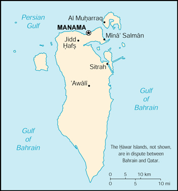

{kind=link}


| Bahrain |
|
|
 | |
| Introduction |
Background: Bahrain's small size and central location among Persian Gulf countries require it to play a delicate balancing act in foreign affairs among its larger neighbors. Possessing minimal oil reserves, Bahrain has turned to petroleum processing and refining, and has transformed itself into an international banking center. The new amir is pushing economic and political reforms, and has worked to improve relations with the Shi'a community.
| Geography |
Location: Middle East, archipelago in the Persian Gulf, east of Saudi Arabia
Geographic coordinates: 26 00 N, 50 33 E
Map references: Middle East
Area:
total:
620 sq km
land:
620 sq km
water:
0 sq km
Area - comparative: 3.5 times the size of Washington, DC
Land boundaries: 0 km
Coastline: 161 km
Maritime claims:
contiguous zone:
24 nm
continental shelf:
extending to boundaries to be determined
territorial sea:
12 nm
Climate: arid; mild, pleasant winters; very hot, humid summers
Terrain: mostly low desert plain rising gently to low central escarpment
Elevation extremes:
lowest point:
Persian Gulf 0 m
highest point:
Jabal ad Dukhan 122 m
Natural resources: oil, associated and nonassociated natural gas, fish
Land use:
arable land:
1%
permanent crops:
1%
permanent pastures:
6%
forests and woodland:
0%
other:
92% (1993 est.)
Irrigated land: 10 sq km (1993 est.)
Natural hazards: periodic droughts; dust storms
Environment - current issues: desertification resulting from the degradation of limited arable land, periods of drought, and dust storms; coastal degradation (damage to coastlines, coral reefs, and sea vegetation) resulting from oil spills and other discharges from large tankers, oil refineries, and distribution stations; no natural fresh water resources so that groundwater and sea water are the only sources for all water needs
Environment - international agreements:
party to:
Biodiversity, Climate Change, Desertification, Hazardous Wastes, Law of the Sea, Ozone Layer Protection, Wetlands
signed, but not ratified:
none of the selected agreements
Geography - note: close to primary Middle Eastern petroleum sources; strategic location in Persian Gulf which much of Western world's petroleum must transit to reach open ocean
| People |
Population:
634,137
note:
includes 228,424 non-nationals (July 2000 est.)
Age structure:
0-14 years:
30% (male 96,240; female 93,846)
15-64 years:
67% (male 252,767; female 173,072)
65 years and over:
3% (male 9,270; female 8,942) (2000 est.)
Population growth rate: 1.78% (2000 est.)
Birth rate: 20.61 births/1,000 population (2000 est.)
Death rate: 3.89 deaths/1,000 population (2000 est.)
Net migration rate: 1.12 migrant(s)/1,000 population (2000 est.)
Sex ratio:
at birth:
1.03 male(s)/female
under 15 years:
1.03 male(s)/female
15-64 years:
1.46 male(s)/female
65 years and over:
1.04 male(s)/female
total population:
1.3 male(s)/female (2000 est.)
Infant mortality rate: 20.48 deaths/1,000 live births (2000 est.)
Life expectancy at birth:
total population:
72.98 years
male:
70.58 years
female:
75.45 years (2000 est.)
Total fertility rate: 2.82 children born/woman (2000 est.)
Nationality:
noun:
Bahraini(s)
adjective:
Bahraini
Ethnic groups: Bahraini 63%, Asian 19%, other Arab 10%, Iranian 8%
Religions: Shi'a Muslim 75%, Sunni Muslim 25%
Languages: Arabic, English, Farsi, Urdu
Literacy:
definition:
age 15 and over can read and write
total population:
85.2%
male:
89.1%
female:
79.4% (1995 est.)
| Government |
Country name:
conventional long form:
State of Bahrain
conventional short form:
Bahrain
local long form:
Dawlat al Bahrayn
local short form:
Al Bahrayn
Data code: BA
Government type: traditional monarchy
Capital: Manama
Administrative divisions:
12 municipalities (manatiq, singular - mintaqah); Al Hadd, Al Manamah, Al Mintaqah al Gharbiyah, Al Mintaqah al Wusta, Al Mintaqah ash Shamaliyah, Al Muharraq, Ar Rifa' wa al Mintaqah al Janubiyah, Jidd Hafs, Madinat Hamad, Madinat 'Isa, Juzur Hawar, Sitrah
note:
all municipalities administered from Manama
Independence: 15 August 1971 (from UK)
National holiday: National Day, 16 December (1971)
Constitution: 26 May 1973, effective 6 December 1973
Legal system: based on Islamic law and English common law
Suffrage: none
Executive branch:
chief of state:
Amir HAMAD bin Isa Al Khalifa (since 6 March 1999); Heir Apparent Crown Prince SALMAN bin Hamad (son of the monarch, born 21 October 1969)
head of government:
Prime Minister KHALIFA bin Salman Al Khalifa (since NA 1971)
cabinet:
Cabinet appointed by the monarch
elections:
none; the monarch is hereditary; prime minister appointed by the monarch
Legislative branch: unicameral National Assembly was dissolved 26 August 1975 and legislative powers were assumed by the Cabinet; appointed Advisory Council established 16 December 1992
Judicial branch: High Civil Appeals Court
Political parties and leaders: political parties prohibited
Political pressure groups and leaders: Shi'a activists have fomented unrest sporadically since late 1994, demanding the return of an elected National Assembly and an end to unemployment; several small, clandestine leftist and Islamic fundamentalist groups are active
International organization participation: ABEDA, AFESD, AL, AMF, ESCWA, FAO, G-77, GCC, IBRD, ICAO, ICRM, IDB, IFC, IFRCS, IHO, ILO, IMF, IMO, Inmarsat, Intelsat, Interpol, IOC, ISO (correspondent), ITU, NAM, OAPEC, OIC, OPCW, UN, UNCTAD, UNESCO, UNIDO, UPU, WFTU, WHO, WIPO, WMO, WTrO
Diplomatic representation in the US:
chief of mission:
Ambassador Dr. Muhammad ABD AL-GHAFFAR Abdallah
chancery:
3502 International Drive NW, Washington, DC 20008
telephone:
[1] (202) 342-0741
FAX:
[1] (202) 362-2192
consulate(s) general:
New York
Diplomatic representation from the US:
chief of mission:
Ambassador Johnny YOUNG
embassy:
Building Number 979, Road 3119 (next to Al-Ahli Sports Club), Block 311, Zinj District, Manama
mailing address:
American Embassy Manama, PSC 451, FPO AE 09834-5100; International Mail: American Embassy, Box 26431, Manama
telephone:
[973] 273-300
FAX:
[973] 272-594
Flag description: red with a white serrated band (eight white points) on the hoist side
| Economy |
Economy - overview: In Bahrain, petroleum production and processing account for about 60% of export receipts, 60% of government revenues, and 30% of GDP. Economic conditions have fluctuated with the changing fortunes of oil since 1985, for example, during and following the Gulf crisis of 1990-91. With its highly developed communication and transport facilities, Bahrain is home to numerous multinational firms with business in the Gulf. A large share of exports consists of petroleum products made from imported crude. Construction proceeds on several major industrial projects. Unemployment, especially among the young, and the depletion of both oil and underground water resources are major long-term economic problems.
GDP: purchasing power parity - $8.6 billion (1999 est.)
GDP - real growth rate: 4% (1999 est.)
GDP - per capita: purchasing power parity - $13,700 (1999 est.)
GDP - composition by sector:
agriculture:
1%
industry:
46%
services:
53% (1996 est.)
Population below poverty line: NA%
Household income or consumption by percentage share:
lowest 10%:
NA%
highest 10%:
NA%
Inflation rate (consumer prices): 0.5% (1998 est.)
Labor force:
295,000 (1998 est.)
note:
44% of the population in the 15-64 age group is non-national (July 1998 est.)
Labor force - by occupation: industry, commerce, and service 79%, government 20%, agriculture 1% (1997 est.)
Unemployment rate: 15% (1998 est.)
Budget:
revenues:
$1.5 billion
expenditures:
$1.9 billion, including capital expenditures of $NA (1998)
Industries: petroleum processing and refining, aluminum smelting, offshore banking, ship repairing; tourism
Industrial production growth rate: 3.4% (1995)
Electricity - production: 4.77 billion kWh (1998)
Electricity - production by source:
fossil fuel:
100%
hydro:
0%
nuclear:
0%
other:
0% (1998)
Electricity - consumption: 1.09 billion kWh (1999)
Electricity - exports: 0 kWh (1998)
Electricity - imports: 0 kWh (1998)
Agriculture - products: fruit, vegetables; poultry, dairy products; shrimp, fish
Exports: $3.3 billion (f.o.b., 1998)
Exports - commodities: petroleum and petroleum products 61%, aluminum 7%
Exports - partners: India 18%, Japan 11%, Saudi Arabia 8%, South Korea 7%, UAE 5% (1997)
Imports: $3.5 billion (f.o.b., 1998)
Imports - commodities: nonoil 59%, crude oil 41%
Imports - partners: Saudi Arabia 45%, US 10%, UK 6%, Japan 5%, Germany 4% (1997)
Debt - external: $2 billion (1997)
Economic aid - recipient: $48.4 million (1995)
Currency: 1 Bahraini dinar (BD) = 1,000 fils
Exchange rates: Bahraini dinars (BD) per US$1 - 0.3760 (fixed rate)
Fiscal year: calendar year
| Communications |
Telephones - main lines in use: 141,000 (1995)
Telephones - mobile cellular: 130,000 (1999 est.)
Telephone system:
modern system; good domestic services and excellent international connections
domestic:
modern fiber-optic integrated services; digital network with rapidly growing use of mobile cellular telephones
international:
tropospheric scatter to Qatar and UAE; microwave radio relay to Saudi Arabia; submarine cable to Qatar, UAE, and Saudi Arabia; satellite earth stations - 2 Intelsat (1 Atlantic Ocean and 1 Indian Ocean) and 1 Arabsat
Radio broadcast stations: AM 2, FM 3, shortwave 0 (1998)
Radios: 338,000 (1997)
Television broadcast stations: 4 (1997)
Televisions: 275,000 (1997)
Internet Service Providers (ISPs): 3 (1999)
| Transportation |
Railways: 0 km
Highways:
total:
3,164 km
paved:
2,433 km
unpaved:
731 km (1998 est.)
note:
there is a paved causeway connecting Bahrain to Saudi Arabia
Pipelines: crude oil 56 km; petroleum products 16 km; natural gas 32 km
Ports and harbors: Manama, Mina' Salman, Sitrah
Merchant marine:
total:
8 ships (1,000 GRT or over) totaling 228,273 GRT/304,654 DWT
ships by type:
bulk 2, cargo 3, container 2, petroleum tanker 1 (1999 est.)
Airports: 3 (1999 est.)
Airports - with paved runways:
total:
2
over 3,047 m:
2 (1999 est.)
Airports - with unpaved runways:
total:
1
1,524 to 2,437 m:
1 (1999 est.)
Heliports: 1 (1999 est.)
| Military |
Military branches: Ground Force, Navy, Air Force, Coast Guard, Police Force
Military manpower - military age: 15 years of age
Military manpower - availability:
males age 15-49:
221,109 (2000 est.)
Military manpower - fit for military service:
males age 15-49:
121,442 (2000 est.)
Military manpower - reaching military age annually:
males:
5,699 (2000 est.)
Military expenditures - dollar figure: $318 million (FY99)
Military expenditures - percent of GDP: 5.2% (FY99)
| Transnational Issues |
Disputes - international: the territorial dispute with Qatar over the Hawar Islands and the maritime boundary dispute with Qatar are currently before the International Court of Justice (ICJ)